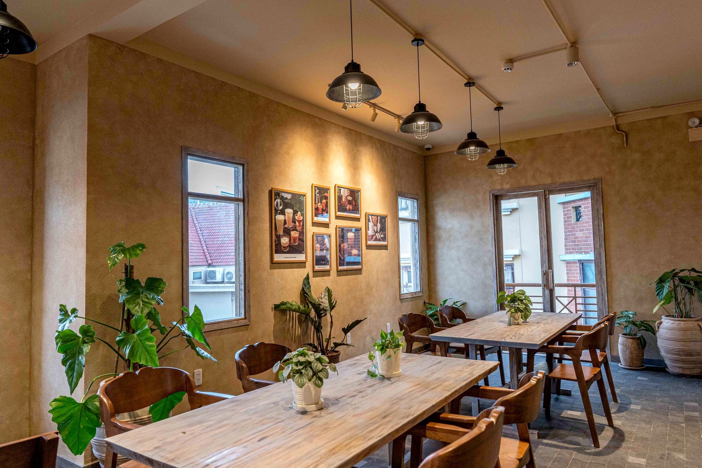

PHONG CÁCH KHÁC BIỆT
26-08-2021
Đi theo concept Cắm Trại – phong cách khác biệt so với các thương hiệu khác trên thị trường, Phê La đã tạo ra ấn tượng mạnh mẽ cho khách hàng nhờ những chất riêng và thiết kế độc đáo của mình.

Tông màu trầm ấm mang đến cảm giác thoải mái, gần gũi
Trong mỗi góc nhỏ tại Phê La đều có sự xuất hiện của ghế dù và bàn xếp, kết hợp với tone màu nâu trầm ấm làm chủ đạo, Phê La mong muốn sẽ mang lại không gian thưởng thức thoải mái, gần gũi và mộc mạc nhất cho khách hàng. Cũng chính bởi sự nguyên sơ này, khách hàng như được hoà mình vào thiên nhiên để tâm tình, thủ thỉ vài ba câu chuyện nhỏ bên những cốc trà, và bỏ lại những suy nghĩ mệt mỏi, xô bồ của cuộc sống.
Tông màu trầm ấm mang đến cảm giác thoải mái, gần gũi
Có thể nói, đây là phong cách khác biệt độc đáo của Phê La khi hướng mình tới một concept không gian hoàn toàn mới. Đây không phải là nơi phù hợp để bạn làm việc hay nghiên cứu, mà là nơi bạn được là chính mình, được giải toả áp lực, được thư giãn và được ‘chill’. Cùng khám phá một không gian mới mẻ và đầy thú vị.